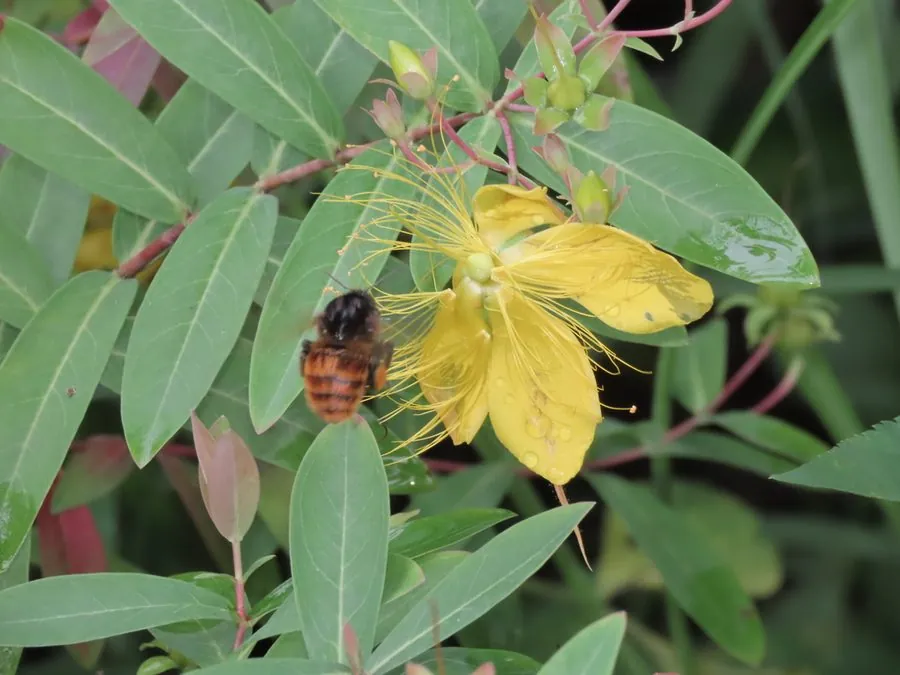

灌木与花木 · 植物界
金丝桃 Hypericum monogynum

金丝桃科金丝桃属半常绿灌木，花金黄、雄蕊细长如金丝，夏季盛开时一片灿烂，是常见的观赏与药用植物。
- 分类
- 门被子植物门纲木兰纲目金虎尾目科金丝桃科属金丝桃属
- 栖息环境
- 山坡、路旁与灌丛，喜光耐半阴、耐寒耐旱
- 地理分布
- 中国河北、河南、陕西、江苏、浙江、江西、福建、湖北、湖南、广东、广西、四川、贵州等地
- 保护级别
- 暂无评估；未被列入国家重点保护野生植物名录
物种志
金丝桃为金丝桃科金丝桃属半常绿灌木，高约一米，分枝多，小枝红褐色。叶片对生，无柄，长椭圆形至披针形，全缘，表面深绿，背面淡绿。花数朵组成顶生的聚伞花序，花冠金黄色，花瓣五枚，雄蕊多数、细长如金丝，长于花瓣，花期五至八月；蒴果卵圆形，成熟时褐色开裂，果期九至十月。
金丝桃分布于中国河北、河南、陕西、江苏、浙江、江西、福建、湖北、湖南、广东、广西、四川、贵州等地，多生于山坡、路旁和灌丛中。它喜光也耐半阴，耐寒、耐旱，对土壤要求不严。花金黄醒目、雄蕊如丝，是优良的夏季观花灌木，可作花境和绿篱；根、叶和果实入药，有清热解毒、祛风湿之效。金丝桃在园林中常成片栽植，花期长达数月。
形态与习性
- 株高约 1 m，小枝红褐色
- 花期5–8 月，花金黄色
- 果期9–10 月，蒴果卵圆形
- 光照喜光，也耐半阴
- 水分耐旱，忌长期积水
- 土壤疏松壤土，适应性强
- 主要用途夏季观花灌木，根叶药用
趣味知识
- 金丝桃的雄蕊细长金黄，长于花瓣，盛开时像一束束金丝，故名金丝桃。
- 它的花期可长达三四个月，是夏季少有的长期开花灌木。
- 金丝桃的果实和根在民间入药，但全草含金丝桃素，过量使用需谨慎。